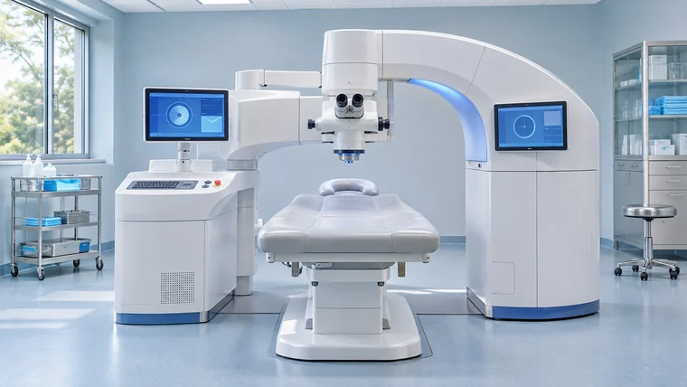
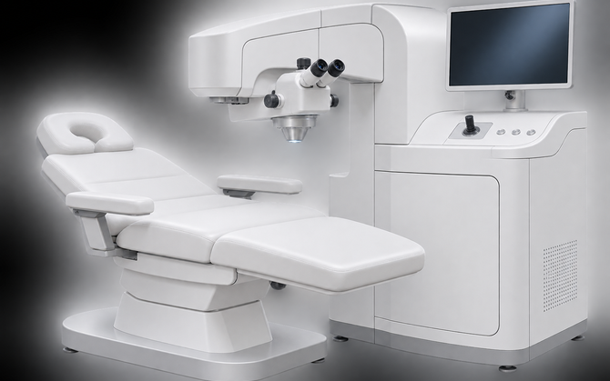
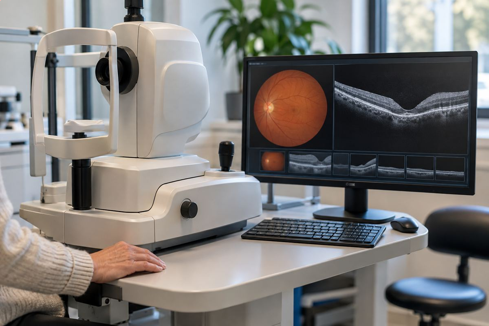
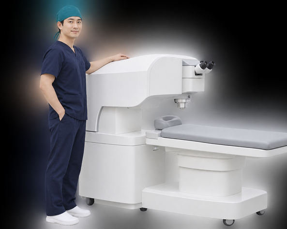
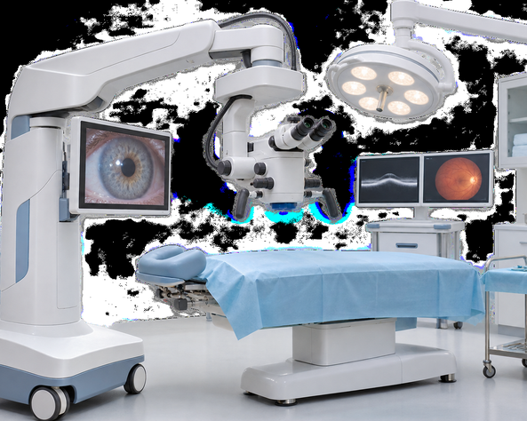
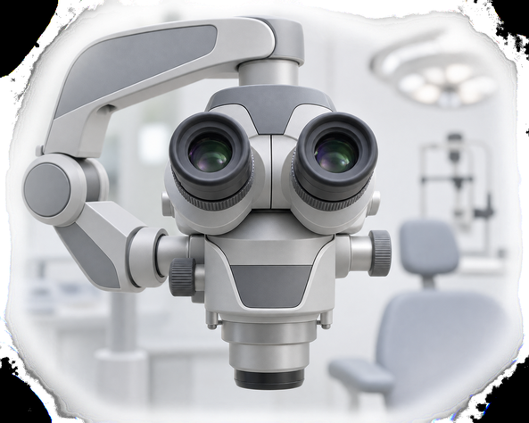
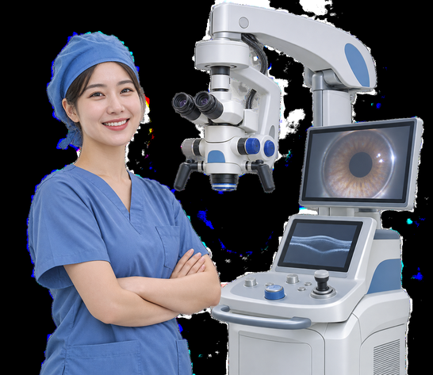
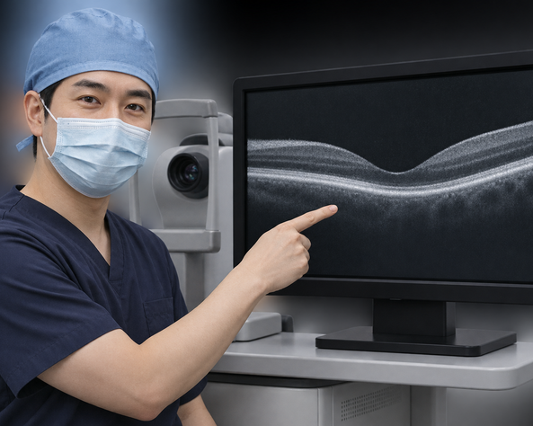

수술센터
수술센터
시력교정 수술은 인생에 한 번이면 충분합니다.
그렇기 때문에 수술과정은 안전해야하고, 결과는 안정적이어야 합니다.
surgical Center surgical Center surgical Center
국내 정상급 집도의,
안전한 의료 장비, 1:1 맞춤 관리까지
서울시원안과 수술센터에서 달라진 시력을 경험해 보세요.
수술센터 소개
서울시원안과 수술센터는 주기적인
대학병원 수준의 의료 장비 도입은 물론
기반 시설에 꾸준히 투자해 더 안전하고
쾌적한 치료 환경을 만들고 있습니다.
2025년까지 약 90,000건이 넘는 시력교정술을 마쳤으며
펨토초 레이저 제조사로부터
한국 표준 닥터 인증 병원,
엑시머 레이저 제조사로부터 우수 인증 병원,
인공수정체 제조사로부터 아시아 우수 인증 병원,
레이저 백내장 장비 우수 인증 의료기관,
스마일 장비 공식 센터로
각각 선정됐습니다.
수술센터장
이선하 의료진 소개
라식 · 라섹을 꾸준히 이어 온 안과
서울시원안과의 시작Focus
on your eyes
-


Vision correction surgery시력교정술
-
실크스마일라식
-
시력교정 수술 경험
-
라식/라섹
-
렌즈삽입술
-
재교정수술
-
-
gerontopia vision correction
노안시력교정
-
4050 노안 라식/라섹
-
노안 렌즈삽입술
-
카탈리스 레이저 백내장 수술
-
풍부한 수술 경험으로 환자의 상태를
정확하게 진단하고 케어합니다.
-
01
평균 25년 이상의
경력을 갖춘 집도의 -
02
안전성과 유효성이
검증된
정품 의료장비 사용 (꾸준한 장비 업그레이드) -
03
전문 간호 인력의
수술 전 과정 밀착 케어
집도의 소개
-
안과전문의
대표원장 도윤서
- 노안 · 백내장 및 시력교정수술 경력 25년 이상
- 시력교정수술 3만 회 이상 집도
- 스마일 시력교정 수술 인증의
- 펨토초 레이저 백내장 수술 인증의
- 렌즈삽입술 인증 전문의 -
안과전문의
원장 이선하
- 시력교정수술 경력 22년 이상
- 시력교정수술 2만 회 이상 집도
- 스마일 시력교정 수술 인증의
- 렌즈삽입술 숙련 집도의(Expert Surgeon)
- 각막 굴절수술 장비 인증 전문의
- 유럽 백내장굴절수술학회(ESCRS) 회원 -
안과전문의
원장 유하림
- 시력교정 및 노안 · 백내장 수술 18년 이상
- 시력교정술 1만 5천 회 이상 집도
- 스마일 시력교정 수술 인증의
- 렌즈삽입술 우수 인증 전문의
- 레이저 백내장 수술 우수 인증의
의료 장비 및 수술실
-

-

-

-

-

-

논문
논문
끊임없는 연구와 노력으로
학술적으로도 인정받고 있습니다.